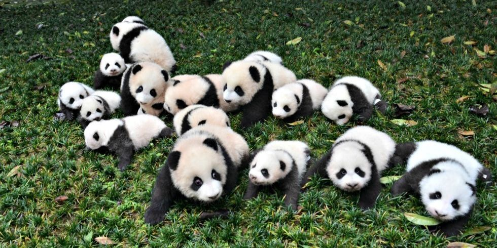
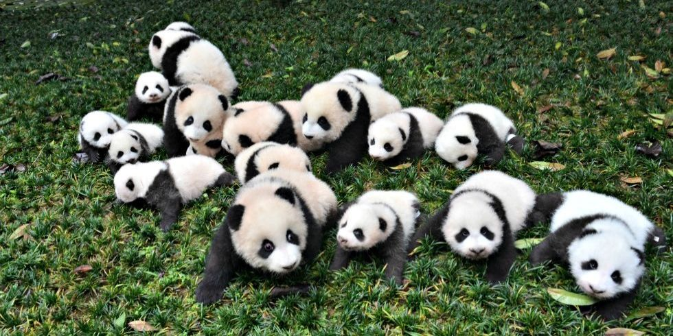

Origen
Dentro de los que llamamos osos pandas existen dos tipos muy diferentes. Por un lado esta el oso panda gigante y el oso panda rojo.
Pandas
El oso panda gigante habita en las montañas de China, en los bosques de bambú y come aproximadamente 14 kilogramos de bambú diarios en casi 12 horas.
El oso panda rojo o tambien conocido como panda menor, es mucho mas pequeño que los pandas gigantes y se diferencian por tener un pelaje rojizo. Tambien se les diferencia porque se reproducen con mayor facilidad, ya que pueden tener hasta siete crias y el periodo de embarazo solo dura seis meses.
Historia
Viven en el este del Tibet y en el Himalaya y pueden llegar a medir un metro de estatura y alcanzar a pesar 80 kilogramos.
Extinción
La población de pandas aumentó un 17% entre 2004 y 2014, gracias a agresivos esfuerzos de conservación, ya que es uno de los simbolos de China y ha salido de la lista de especies en peligro.